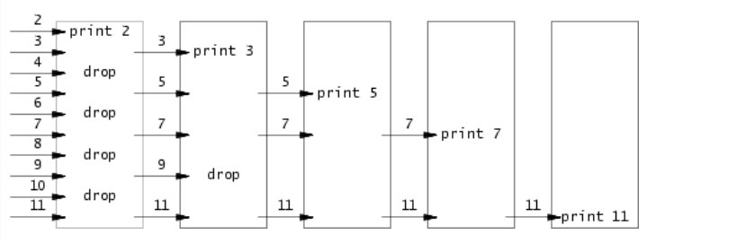
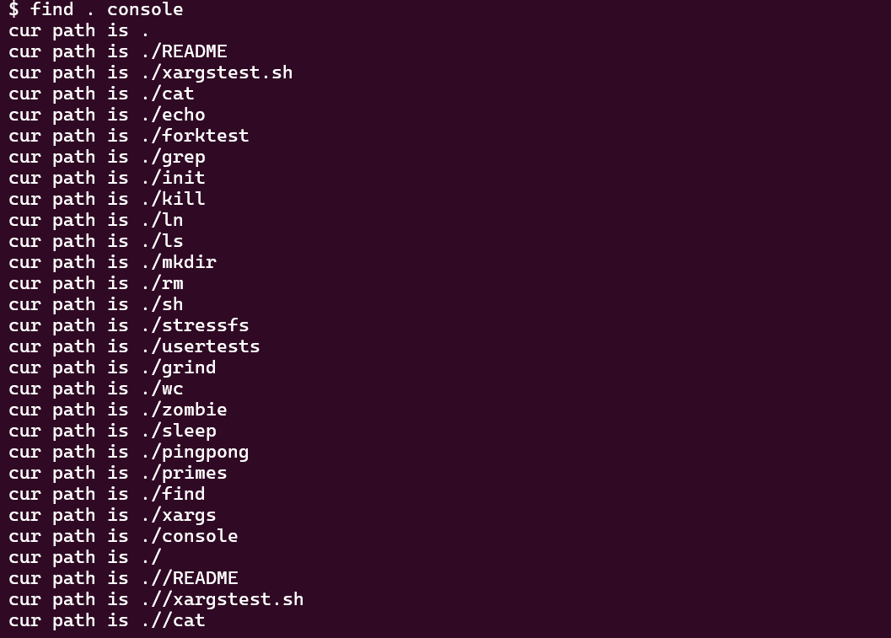
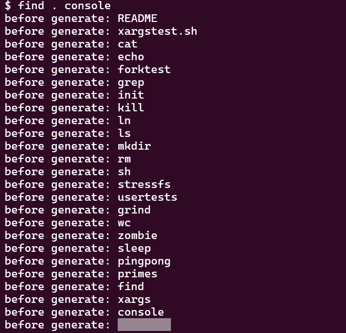

MIT6.s081 2021 Lab Utilities
Boot xv6
按照示例切换到 util 分支后，看到目录下包含 Makefile 文件，执行 make qemu 即可。
sleep
思路
借助系统调用 sleep 实现一个命令行程序，关键是要找到封装了系统调用的 C 函数的位置，根据提示：
…
user/user.hfor the C definition ofsleepcallable from a user program …
可知该函数的声明位于 user.h 头文件中，声明方式很简单：
1 | int sleep(int); |
将其“拷贝”（include）到需要编写的代码 user/sleep.c 中，调用 sleep(<睡眠时间>) 即可。
最后，按照提示，将编写的 sleep 代码添加到 Makefile 的 UPROGS 中，添加后如下所示：
1 | UPROGS=\ |
代码
1 | // user/sleep.c |
pingpong
思路
本题主要是要理解管道的接口设计，以及借助该接口实现父进程与子进程之间的通信。这是 xv6 文档中对于 pipe 调用的描述：
1 | int pipe(int p[]) // Create a pipe, put read/write file descriptors in p[0] and p[1]. |
pipe 创建一个管道，并分别将该管道的读、写端文件描述符置为 p[0] 和 p[1]，之后调用 fork 创建一个子进程，由于 fork 的作用是将父进程的数据直接拷贝给子进程，因此子进程同时继承了父进程的管道文件描述符，可以借助该文件描述符进行进程间通信（IPC），相当于借助一个共享文件进行通信，只不过该“文件”存储在内存的内核区域中，而不占用实际的磁盘存储空间。
利用管道解决本题的基本流程如下，首先需要创建两个管道 pa 和 pb，然后：
- 父进程向管道 pa 的写端写入 1 字节数据，然后关闭 pa 的写端。
- 子进程从管道 pa 的读端读取 1 字节数据，然后关闭 pa 的读端，打印信息，然后向管道 pb 的写端写入 1 字节数据，关闭 pb 的写端。
- 父进程从管道 pb 的读端读取 1 字节数据，关闭 pb 的读端，最后打印信息。
这里需要解释一下为什么需要两个管道（只是个人的方法，其它方法可能只需要一个管道），由于进程调度策略的影响，父进程和子进程的执行顺序并不确定。可能出现这样一种情况：在 fork 创建子进程后，父进程先被调度，将 1 字节数据写入管道，这时理想的情况是子进程被调度，然后读取父进程发送的数据，但是事实可能并不会如我们所愿，子进程可能一直得不到调度，父进程继续向下执行，从管道中读取自己刚刚发送的 1 字节的数据，这样子进程就无法收到父进程发送的数据，父子进程之间的通信也就失败了。
通过创建两个管道，并分别关闭对应的读端和写端，就能够得到两个单向数据流的管道，也就不会有上述自己写入的数据被被自己读取的情况出现。
代码
1 | // user/pingpong.c |
primes
思路
实现一个基于管道的并发埃式筛（The sieve of Eratosthenes），关键是要理解管道的机制，以及仔细阅读题干给出的文章，该文章有关该埃式筛方法的介绍图片如下所示：

该算法的个人感觉十分精妙，以下是基本流程：
- 进程 0（主进程）发出一系列从 2 开始的整数序列。
- 进程 1 首先接收来自进程 0 发出的第一个整数 prime，prime 一定是一个质数，将其打印出来。然后继续按顺序接收来自进程 0 发出的其它整数，若接收到的某个整数能够被 prime 整除，则丢弃它（不做处理），否则将该整数发送给下一个进程。
- 后续进程的操作与进程 1 类似，直到没有任何整数发送给下一个进程，程序终止。
算法的思路并不复杂，主要问题在于如何使用管道实现上述流程中进程 i 与进程 i + 1 之间的通信。我这里只使用了一个 int[2] 来轮换地存放管道的文件描述符，并使用一个缓冲区来暂存每次要发送给下一个进程的数，在一个进程完成它所做的工作后，再将缓冲区中的数据批量写入管道，并创建子进程来完成接下来的工作。这里要千万注意管道完成读取或写入后及时关闭，否则可能会出现子进程读取管道时阻塞的情况。
我在写下这篇博客的过程中发现，虽然我使用的这个方法能够达到预期的效果，并成功通过测试用例，但是其实是有一定问题的：本方法的处理过程是串行的。事实上，每个进程都是在将本进程的所有工作全部完成之后，再调用 fork 来创建子进程，完成后续的工作，本质上与放在一个进程中完成所有工作并没有区别，与文章中提到的 “Concurrent” 完全相悖。理想的做法应该是创建一个 int[2] 数组来存放管道的文件描述符，并及时 fork 子进程来工作，以此来实现并发，具体的代码实现有待后续改进。
代码
1 | // user/primes.c |
find
思路
本题是这个 Lab 中我花费时间最长的，代码思路虽然不算很复杂，但是有很多的细节问题我在写的时候没有考虑到，感觉 debug 时间差不多是 coding 的几倍了。。。
题目要求实现一个简易的 find 命令，根据提示可以参考 user/ls.c 对目录的读取操作，并使用递归来实现对子目录的查找。基本思路就是打开一个指定路径的文件（目录也算是特殊的文件），并根据文件的类型做不同处理：
- 如果文件是常规文件，则判断改文件名是否是目标文件名（
find的第二个参数），如果是，则将其完整路径打印至标准输出。 - 如果文件是目录文件，则读取该目录下的所有文件名，并在该目录路径尾部加上
/st.name，依次构造一个新的文件名继续递归调用find。注意不要递归进入.和..，否则将导致无限递归。
以上便是基本思路，具体实现可以阅读完整代码，下面讲一下我遇到的一些问题（bug）：
- 使用
fstat获取文件信息时st.type始终为 3（T_DEVICE类型）。
这个问题其实挺难绷的，原因是我把 if ((fd = open(path, 0)) < 0) 写成了 if ((fd = open(path, 0) < 0))，因为 < 的优先级大于 =，所以导致 fd 的值始终为 0 或 1（逻辑表达式的值只能为真或假），那么后续产生意想不到的结果也就不意外了。。。
- 出现
find: cannot open file ./sh，之后所有文件均打开失败
在打印出文件描述符的值后，问题的起因比较明显了。

文件描述符一直在增大，最终文件打开失败，open 返回 -1。很明显，是因为文件在打开后没有及时关闭，并释放文件描述符，最终文件描述符被全部占用，新的文件无法再被打开。这也解释了既然程序退出后，所有打开的文件会自动关闭，为什么还要建议手动关闭文件的问题。
- 读取到空文件名
前面的问题解决之后，我发现程序仍然会出现无限递归搜索的情况（如下图所示），按理说我已经对文件名进行了判断，如果是 . 或者 .. 则不做处理。

尝试打印文件名之后，我发现目录的最后一个文件名为空，这样的空文件名将导致程序不断往其末尾追加斜杠 / 而并没有递归进入该目录中。

事实上，使用 read 读取目录时，在读取目录的所有条目之后，会返回一个空的 dirent 结构体，此时 de.name 为空，作为循环结束的标志。其实 user/ls.c 有针对这个特性的判断，不过当时 coding 的时候没有细看。所以正如 Lab guidance 中所说：
Only when you have a firm grasp of the assignment and solution, then start coding.
代码
1 | // user/find.c |
xargs
思路
相较于 find，xargs 的实现就简单很多了。由于之前自己实现过一个简单的 shell，因此对于 exec 系统调用还算比较熟悉，本题的主要内容就是根据 argv 和标准输入构造一个新的参数列表，作为指定命令行程序的参数，并使用 exec 来进行调用。
程序的流程比较简单，这里不过多介绍，直接查看完整代码即可。
代码
1 | // user/xargs.c |
 微信
微信 支付宝
支付宝